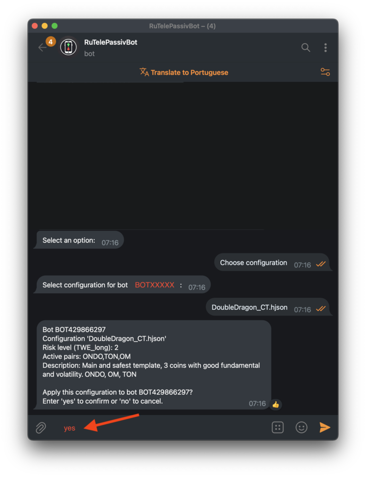

Configuring TelePassivBot in Telegram
Настройка TelePassivBot в Telegram
Step 1
Шаг 1
Type "/start" to launch the bot and select your language.
Введите «/start», чтобы запустить бота и выбрать язык.

Step 2
Шаг 2
Click "Add Bot" to create a new bot instance.
Нажмите на кнопку «Добавить бота», чтобы создать новый экземпляр бота.

Step 3
Шаг 3
Select your exchange (this guide uses Bybit as an example).
Выберите свою биржу (в данном руководстве в качестве примера используется Bybit).

Step 4
Шаг 4
Enter the API key generated in the previous section.
Введите ключ API, созданный в предыдущем разделе.

Step 5
Шаг 5
Enter the API Secret generated in the previous section.
Введите секретный ключ API, созданный в предыдущем разделе.
If successful, in a few seconds you'll see your account balance and the bot's name.
Если всё прошло успешно, через несколько секунд вы увидите баланс своего счёта и имя бота.

Step 6
Шаг 6
Next, choose a bot configuration.
Затем выберите конфигурацию бота.

Step 7
Шаг 7
Choose the configuration you prefer, such as BrahmaBot or DoubleDragon.
Выберите ту конфигурацию, которая вам больше подходит, например, BrahmaBot или DoubleDragon.

Step 8
Шаг 8
A brief description will appear. If you agree, type "yes" to confirm.
Появится краткое описание. Если вы согласны, введите «да», чтобы подтвердить.
Step 9
Шаг 9
Click "Run bot" and you’re ready to go!
Нажмите «Запустить бота», и всё готово!